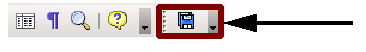
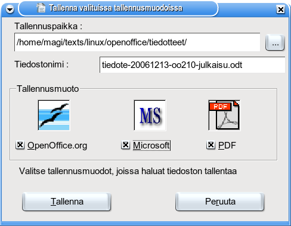

MultiSave-lisäosa joustavaan tallentamiseen
MultiSave-lisäosa tarjoaa mahdollisuuden tallentaa Writer-, Calc-
tai Impress-asiakirja samanaikaisesti kolmeen eri
tallennusmuotoon:
- OpenOfficen oletuksena käyttämä OpenDocument-muoto
- Microsoft Office 97/2000/XP (Word, Excel, PowerPoint)
- PDF-tallennusmuoto
Tallennus tapahtuu työkalun tallennuspainikkeella:

Tallennuksessa voi valita tallennuskansion, tiedoston nimen ja
tallennusmuodot:

Lataa ja asenna MultiSave
OpenOffice.org-lisäosapalvelusta.
Asennuspaketti asennetaan lisäosien hallinnan avulla: Työkalut ->
Lisäosien hallinta.
|